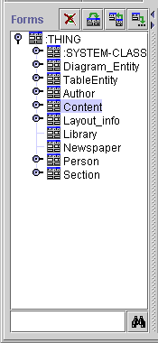

The Forms pane at the left of the Forms Tab displays all the classes in your project. The Forms Pane has three components:

This displays all the forms in the project, by the name of their associated class. When a single form is selected in this window, its associated form is displayed in the Form Edit pane to the right. Every class, concrete or abstract, has an associated form. For a concrete class, a user defines an instance of the class by filling out the class's form. For an abstract class, the form is only used to define layout information which can then be inherited by other classes. If you have not created or modified the form, Protégé-2000 uses a default layout based on the slot type and cardinality.
As usual, icons to the left of the name give information about the display of the hierarchy:
| This icon indicates that all subclasses of the class are displayed. In some views, this is shown as a -. | |
| This icon indicates that the class has subclasses which are not currently displayed. In some views, this is shown as a +. | |
| No icon | The absence of a
or a |
The following icon to the right of a class form gives information about the form associated with the class:
|
The form has been customized. You can customize a form by altering its widgets, for example: moving or resizing a widget, changing a widget's label, or selecting which buttons appear for the widget. See Modifying a Widget's Appearance for more information. You can clear all customizations for the selected form by clicking the Remove Customizations Form Button at the top right of the Forms Window. This will return the form to the default layout based on slot type and cardinality. |
Next: The Form Buttons